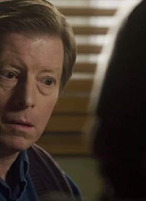

#1767 Lars und die Frauen
Alternativ: Lars and the Real Girl
Auszeichnungen: für 1 Oscars nominiert

 IMDB-Wertung: 7.3 / 10
IMDB-Wertung: 7.3 / 10  Metascore: 70
Metascore: 70 
Lars Lindstrom ist ein schüchterner Einzelgänger, der nicht einmal seinen Bruder Gus und seine fürsorgliche Schwägerin Karin an seinem einsamen Leben in einer kleinen Wohnung in der Garage hinter seinem Elternhaus teilhaben lässt. Bis Lars ihnen überraschend seine neue Freundin Bianca vorstellt - für ihn ist sie eine bildschöne Brasilianerin, für Gus und Karin - eindeutig und ohne jeden Zweifel! - eine lebensgroße Sexpuppe aus Silikon! Irritiert holen sie sich Rat bei der Ärztin Dr. Dagmar Berman ein, die eine überraschende Diagnose stellt: Lars kann nur geholfen werden, wenn sie und die ganze Gemeinde Lars' Freundin behandeln, als sei Bianca tatsächlich lebendig. Schnell steht die Schönheit im Mittelpunkt des öffentlichen Lebens, ganz zum Missfallen von Lars, der zwar seinen Mitmenschen immer näher kommt, aber Angst hat, er könnte Bianca verlieren...
Jahr: 2007
Dauer: 106 Minuten
FSK: 0
Land: USA Studio: MGMTonspuren: DTS - ,
Untertitel: Deutsch,
Auflösung: 1080p (1920x1040) Größe: 8355 MB
Genre: Komödie, Drama
Regisseur: Craig Gillespie
Drehbuch: Nancy Oliver
Soundtrack: David Torn
Darsteller:
 Ryan Gosling als Lars Lindstrom
Ryan Gosling als Lars Lindstrom Emily Mortimer als Karin
Emily Mortimer als Karin Paul Schneider als Gus
Paul Schneider als Gus Kelli Garner als Margo
Kelli Garner als Margo Doug Lennox als Mr. Hofstedtler
Doug Lennox als Mr. Hofstedtler Patricia Clarkson als Dagmar
Patricia Clarkson als Dagmar- Karen Robinson als Cindy
- Maxwell McCabe-Lokos als Kurt
 Boyd Banks als Russell
Boyd Banks als Russell Tommy Chang als Nelson
Tommy Chang als Nelson Arnold Pinnock als Baxter
Arnold Pinnock als Baxter Joshua Peace als Jerry
Joshua Peace als Jerry- Lauren Ash als Holly
- R.D. Reid als Reverend Bock
- Nancy Beatty als Mrs. Gruner
-  Joe Bostick als Mr. Shaw
- Liz Gordon als Mrs. Schindler
- Nicky Guadagni als Mrs. Petersen
- Billy Parrott als Erik
- Sally Cahill als Deb
- Angela Vint als Sandy
- Liisa Repo-Martell als Laurel
- Darren Hynes als Moose
- Víctor Gómez als Hector
- Aurora Browne als Lisa
- Alec McClure als Steve
- Tannis Burnett als Nurse Amy
- Lindsey Connell als Victoria
- Aaron Ferguson als Choir Member #1
- Danna Howe als Choir Member #2
- Annabelle Torsein als Choir Member #3
- Tim Blake als Choir Member #4
- Torquil Colbo als Choir Member #5
Datei: X:\2007(G-M)\Lars und die Frauen (2007, FSKo.Al., 1920x1040).mkv seit 18.08.2015
Festplatte: HD 2007(A-Z)-2008(A-F)
 Es gibt insgesamt 64 Filme in der Gruppe '2007(G-M)'
Es gibt insgesamt 64 Filme in der Gruppe '2007(G-M)'